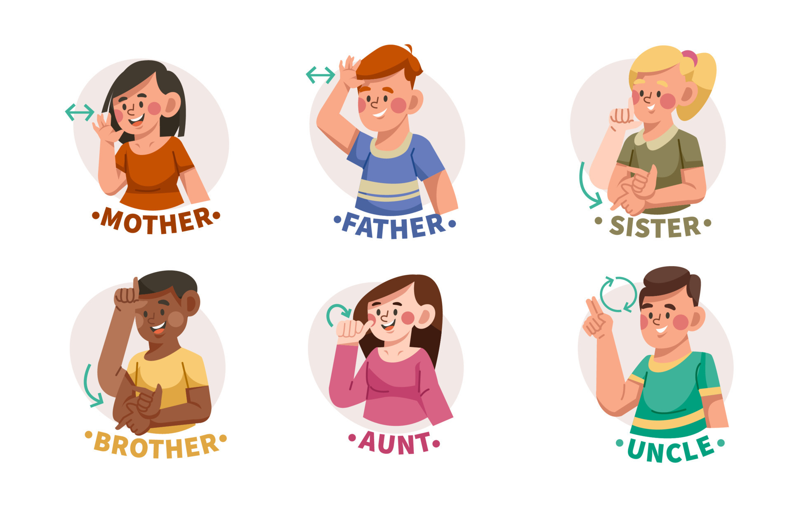

Sign language is a visual language that uses hand shapes, facial expression, gestures and body language. Sign languages have their own vocabulary, construction and grammar. Here are a few signs to get you started, known as family signs.

The ABC and number chart are the next tools that kids may use to learn ASL. The number chart will show numbers from one to ten(1–10). The ABC chart will show the twenty-six signs for each letter.